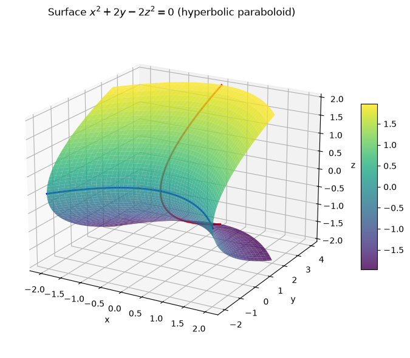
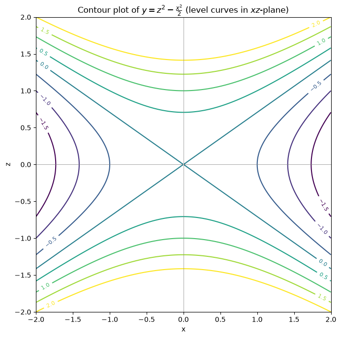
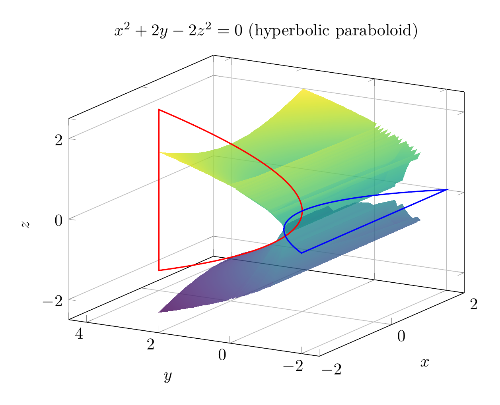
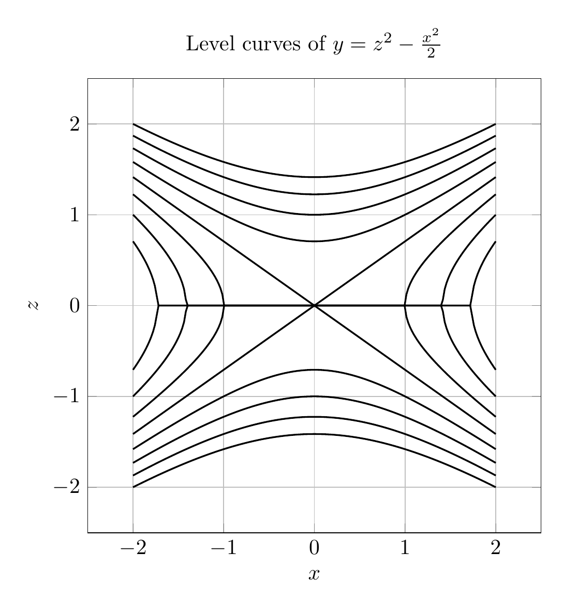

Path: mcma-Kimi-K2.7-Code/calculus-12.6.31/chat_20260825_024030_706307_utc_0800
Problem
Please solve the math problem in the image.

End of problem
Answer
We are asked to reduce the equation
\[
x^2+2y-2z^2=0
\]
to a standard form, classify the surface, and sketch it.
### Step 1: Solve for \(y\)
Since \(y\) appears only linearly, isolate it:
\[
2y = 2z^2 - x^2
\]
\[
y = z^2 - \frac{x^2}{2}
\]
This is the standard form of a **hyperbolic paraboloid** opening in the positive \(y\)-direction.
### Step 2: Classify the surface
A hyperbolic paraboloid has the general standard form
\[
y = \frac{z^2}{b^2} - \frac{x^2}{a^2}
\]
Comparing with
\[
y = z^2 - \frac{x^2}{2}
\]
we see \(b=1\) and \(a=\sqrt{2}\). Thus the surface is a **hyperbolic paraboloid** (a "saddle" surface).
### Step 3: Cross-sections
- **Plane \(y=k\) (horizontal):**
\[
z^2 - \frac{x^2}{2} = k
\]
These are hyperbolas. For \(k>0\), the hyperbolas open along the \(z\)-axis; for \(k<0\), they open along the \(x\)-axis; for \(k=0\), we get the degenerate pair of lines
\[
z = \pm \frac{x}{\sqrt{2}}
\]
- **Plane \(x=0\):**
\[
y = z^2
\]
This is a parabola opening in the positive \(y\)-direction.
- **Plane \(z=0\):**
\[
y = -\frac{x^2}{2}
\]
This is a parabola opening in the negative \(y\)-direction.
Because the cross-sections are parabolas in two perpendicular directions and hyperbolas in horizontal planes, the surface is a saddle-shaped hyperbolic paraboloid.
### Final Answer
\[
\boxed{y = z^2 - \frac{x^2}{2}, \quad \text{hyperbolic paraboloid}}
\]
---


\documentclass[border=10pt]{standalone}
\usepackage{pgfplots}
\pgfplotsset{compat=1.17}
\begin{document}
\begin{tikzpicture}
\begin{axis}[
xlabel={$x$}, ylabel={$y$}, zlabel={$z$},
title={$x^2+2y-2z^2=0$ (hyperbolic paraboloid)},
view={-60}{20},
colormap/viridis,
samples=40,
domain=-2:2,
y domain=-2:2,
zmin=-2.5, zmax=2.5,
ymin=-2.5, ymax=4.5,
grid=major,
width=10cm,
height=8cm
]
\addplot3[surf, shader=interp, opacity=0.8] {sqrt((x^2+2*y)/2)};
\addplot3[surf, shader=interp, opacity=0.8] {-sqrt((x^2+2*y)/2)};
\addplot3[red, thick, samples=100, variable=\t, domain=-2:2] (0, \t^2, \t);
\addplot3[blue, thick, samples=100, variable=\t, domain=-2:2] (\t, -\t^2/2, 0);
\end{axis}
\end{tikzpicture}
\end{document}

\documentclass[border=10pt]{standalone}
\usepackage{pgfplots}
\pgfplotsset{compat=1.17}
\begin{document}
\begin{tikzpicture}
\begin{axis}[
xlabel={$x$}, ylabel={$z$},
title={Level curves of $y=z^2-\frac{x^2}{2}$},
width=9cm,
height=9cm,
axis equal,
xmin=-2.5, xmax=2.5,
ymin=-2.5, ymax=2.5,
grid=major,
colormap/viridis,
legend pos=south east
]
\foreach \c in {-1.5,-1,-0.5,0,0.5,1,1.5,2}{
\addplot[thick, domain=-2:2, samples=200, forget plot] ({x}, {sqrt(max(\c+x^2/2,0))});
\addplot[thick, domain=-2:2, samples=200, forget plot] ({x}, {-sqrt(max(\c+x^2/2,0))});
}
\end{axis}
\end{tikzpicture}
\end{document}

End of answer